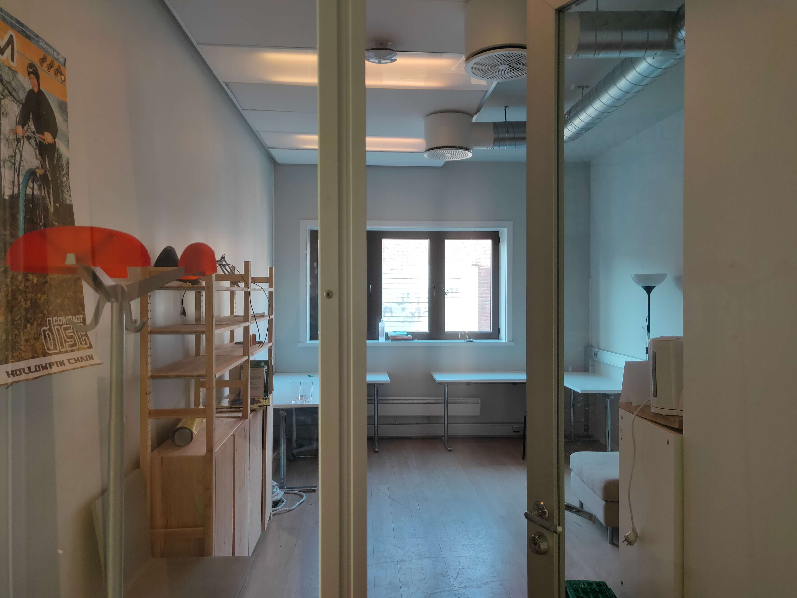

S1: Us design musicians I
Where does sound begin, where does designing end?
This is the first post of a weekly summarization of Mats and Hermans work during their self programming semester spring 2021.
This blog system will function as both a process archive and a communication channel with externals, including you, who are reading this right now. The layout of this webpage will be updated following the development of our project. We hope that this form of archivation will help illustrate the evolution of the project themes, our approach to archivation, and our programming skills.
This is week 2 of the year, and also week 2 of this project. Our outline takes on the creation and consumption of music through a design lens. In other words, how can we apply design thinking to the making, sharing and enjoyment of sound? The general outline is summarized in a preliminary document.
With the introduction of the admission to all recorded music through history more or less for free, mankind’s relation to music has changed on many levels. Both musicians and listeners have lost and benefited from the evolution of the mediums surrounding the sonic space. In the age of streaming, we believe the predictability and influence of pre-fabricated preferences, and exploitation of the sense of exploration, have taken some of the magic away. In this project, we also want to address the magic that has been added to the sonic medium after this digital shift, including the way people interact with it, perhaps also for exploitation.
We are concerned with three main topics that we will explore;
What traits follow the crossing of the underground and the mainstream?
What role can design play in the democratization of music and sound?
What distinguishes the musical landscape of the post-streaming era?
As designers, we aren’t musicians, and as musicians, we aren’t designers. According to Diedrich Diedrichsen, music has no pure value as it is a very volatile “thing”, as it disappears as soon as the sounds end. At the same time, designers are incredibly involved in the formalization of music through streaming platforms, instruments, services and much more. So, the value from the designers POV does not necessarily lie in the music itself, it rather lies in the already established relationship that a surprisingly large amount of people have to music. Designers gladly build the pathway between music and listener, but the music and message itself is something else.
What we’ve done:
This week has been spent looking inwards, on our own past and present experience of what music is to us in light of our design education.
The task we set ourselves for this week was reading and cleaning out our office space for the semester. We did this.
In addition to that we started to align our own musical relationships as much as possible, as they are very different in terms of approach and preferred genres. To start this alignment process, we mapped our personal musical adolescence. Herman has grown up with digital music, while Mats has experiences in more analog formats and mediums, both in creation and enjoyment. We see this as an advantage, as our own experience and disagreements on music opens for approaches via our own networks, sources, artists and theories.
We know that there are things that we don’t know, and we want to understand what we do know as we are getting started, which makes it easier to move on from our own previous understanding, in order to differentiate from our unknowing past.
As a continuation, we tried to show each other all the different phenomenons, scenes, artists and other interesting musical things, that we have both experienced and found online during our lives. The point of this was to further align our musical «chakras», and to be able to be as much on the same page as we could, in terms of approach.